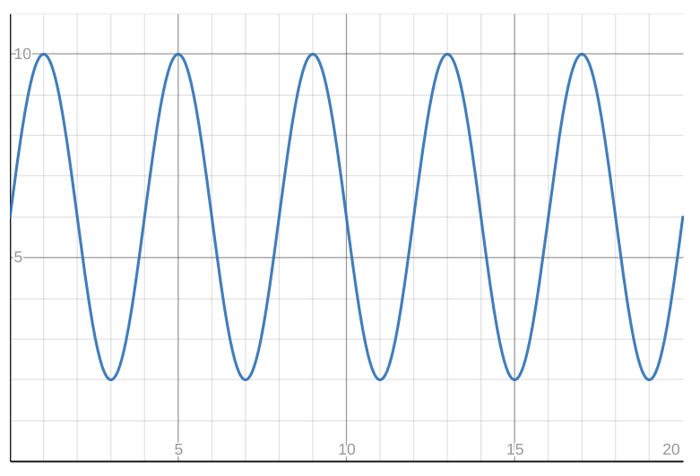
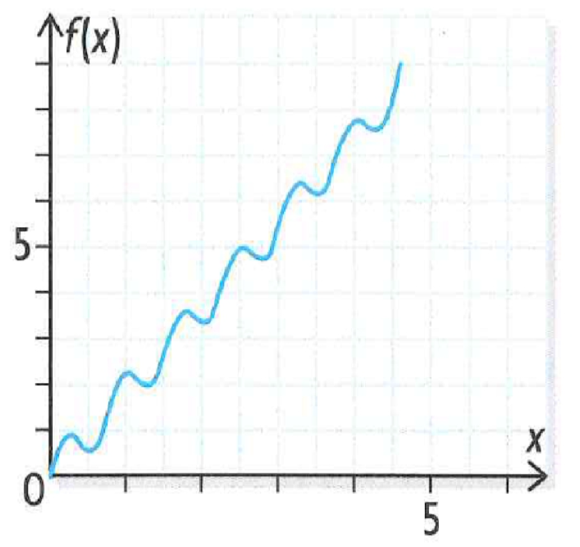
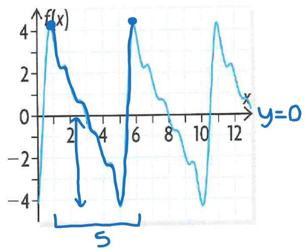

L1: Periodic Functions
Notes
What is a periodic function?
A periodic function is a function in which the values of repeat at regular intervals of .
Example
The height of somebody who is taking a ride on a large Ferris wheel is periodic.

The primary trigonometric ratios (, , ) are periodic functions.
Vocabulary for periodic functions
Cycle: A complete series of y values that repeats at regular intervals (peak to peak/trough to trough)
Period: The horizontal distance between the beginning of the cycle and the end
Amplitude: Vertical distance between the middle of the graph and the peak/trough of the function
Midline: Horizontal line that passes through the middle of the graph
Phase shift: Horizontal translation of graph

Periodic functions of , , and
Pay attention to the 5 key points.
0 90 180 270 360 0 1 0 -1 0

Pay attention to the 5 key points.
0 90 180 270 360 1 0 -1 0 1

Properties of , and
:
Domain:
Range:
Maximum value:
Minimum value:
Period: or
Amplitude:
Midline:

Pay attention to the 5 key points.
-90 45 0 45 90 undefined -1 0 1 undefined Similar curve as

Properties of
:
Domain:
Range:
Maximum value: None
Minimum value: None
Period: or
Questions
Try and answer the following questions by yourself. If you can’t get the answer: click on the tip, or resort to checking the answers.
Determine if the following functions are periodic. If they are, underline a cycle, trace the mid line, and indicate the period and amplitude of the function
Tip
Understand what a periodic function is:
A periodic function is a function in which the values of repeat at regular intervals of .
Recognize the vocabulary of periodic functions:
Cycle: A complete series of y values (peak to peak/trough to trough)
Period: The horizontal distance between the beginning of the cycle and the end
Amplitude: Vertical distance between the middle of the graph and the peak/trough of the function
Midline: Horizontal line that passes through the middle of the graph
Phase shift: Horizontal translation of graph
Blank
Blankleft

Answer
Periodic.
Midline: y=6
Period = 4
Amplitude = 4

Blankright

Answer
Not periodic.
Blankleft
Answer
Periodic.
Midline: y=0
Period = 4
Amplitude = 4

L2: Transformations of and
Notes
Blanktextcenter
Transformations of and
has an affect on:
- amplitude
- max/min
- range
has an effect on:
- periods
- x-axis
has an effect on:
- phase shift
- x-axis
has an effect on:
- peak/trough
- range
- y-axis
Key Formulas
amplitude
period or
midline:
or
phase shift:
() when
() when
Transforming Axes
Use the following steps to transform axes:
- Trace new axes
(Midline)
(Phase shift)
- Trace the curve of /

- Use to determine the max/min values
- Determine the period and the distance of points
Questions
Trace 1 cycle of each function by transforming the axes
Blanktextcenter
Answer

Blanktextcenter
Answer

*Reflection
Blanktextcenter
Answer

*Reflection
Write 2 possible equations (one with , one with ) for the function.
Blank
Blankleft
Answer
Equations:
- or

L3: Transformation of Tan
Blanktextcenter
Transformations of
has an affect on:
- 3 key points
has an effect on:
- periods
- x-axis
- domain
- asymptotes
has an effect on:
- phase shift
- x-axis
- asymptotes
has an effect on:
- y-axis
- 3 key points
Base Function
There are x-intercepts where
There are vertical asymptotes where
is special, it has a default period of . It also has no amplitude, we use two reference points that are at instead

Transforming Axes
Use the following steps to transform axes:
- Trace new axes
- Trace the vertical asymptotes and the 3 key points
- Use to etiquette the y axis
- Determine the period and the distance of points
L5: Trigonometric Identities
Key Formulas
Reciprocal:
Quotient:
Pythagorean:
def test():
print("Hello world!") console.log("Hello world!") System.out.println("Hello world!"); \begin{align*}
\text{Hello world!}
$\sin$
\end{align*}